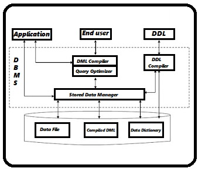

Overall Database Structure

DBMS acts as an interface between user and the database. DBMS are very large and typically divided into modules :-
DDL Compiler - Converts DDL statements to a set of tables containing metadata stored in a data dictionary.Metadata information can be the name of files,data items,storage details of each file,mapping information and constraints,etc.
DML Compiler and Query Optimizer - DML compiler translates the Data Manipulation Languages into query
Engine instructions. It might also do optimization for query.
Query processor/optimizer translates statements in a query language into low-level instructions the database manager understands. (It is used to find an equivalent but more efficient form).
Data Manager - The data manager is the central software component of the DBMS. It is sometimes referred to as the database control system.
One of the functions of the data manager is to convert operations in the user's queries coming directly via the query processor or\ indirectly via an application program from the user's logical view to a physical file system.
The data manager is responsible for interfacing with the file system as show. In addition, the tasks of enforcing constraints to maintain the consistency and integrity of the data, as well as its security, are also performed by the data manager.
It is also the responsibility of the Data. Manager to provide the synchronization in the simultaneous operations performed by concurrent users and to maintain the backup and recovery operations.
Data Dictionary - Data Dictionary is a repository of description of data in the database.A data dictionary contains a list of all files in the database, the number of records in each file and the names and types of each field. Most database management systems keep the data dictionary hidden from users to prevent them from accidentally destroying its content.
Functions of the Data Dictionary-
1. Defines the data element.
2. Helps in the scheduling.
3. Helps in the control.
4. Permits the various users who know which data is available and how can it be obtained.
5. Helps in the identification of the organizational data irregularity.
6. Acts as a very essential data management tool.
7. Provides with a good standardization mechanism.
8. Acts as the corporate glossary of the ever growing information resource.
9. Provides the report facility, the control facility along with the excerpt facility.
Data Files - It stores the database.
Compiled DML - The DML complier converts the high level Queries into low level file access commands known as compiled DML.
End Users - End Users are the people who interact with the database through applications or utilities. The various categories of end users are:
1. Casual End Users - These Users occasionally access the database but may need different information each time. They use sophisticated database Query language to specify their requests. For example: High level Managers who access the data weekly or biweekly.
2. Native End Users - These users frequently query and update the database using standard types of Queries. The operations that can be performed by this class of users are very limited and effect precise portion of the database.For example: - Reservation clerks for airlines/hotels check availability for given request and make reservations. Also, persons using Automated Teller Machines (ATM's) fall under this category as he has access to limited portion of the database.
3.Standalone end Users/On-line End Users - Those end Users who interact with the database directly via on-line terminal or indirectly through Menu or graphics based Interfaces.Example:-Library Management System.